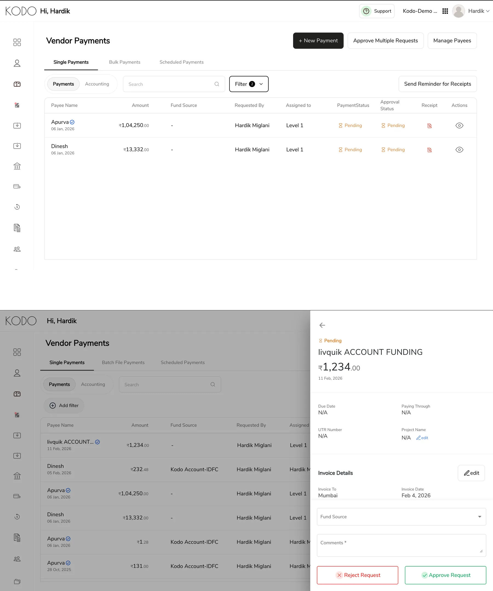
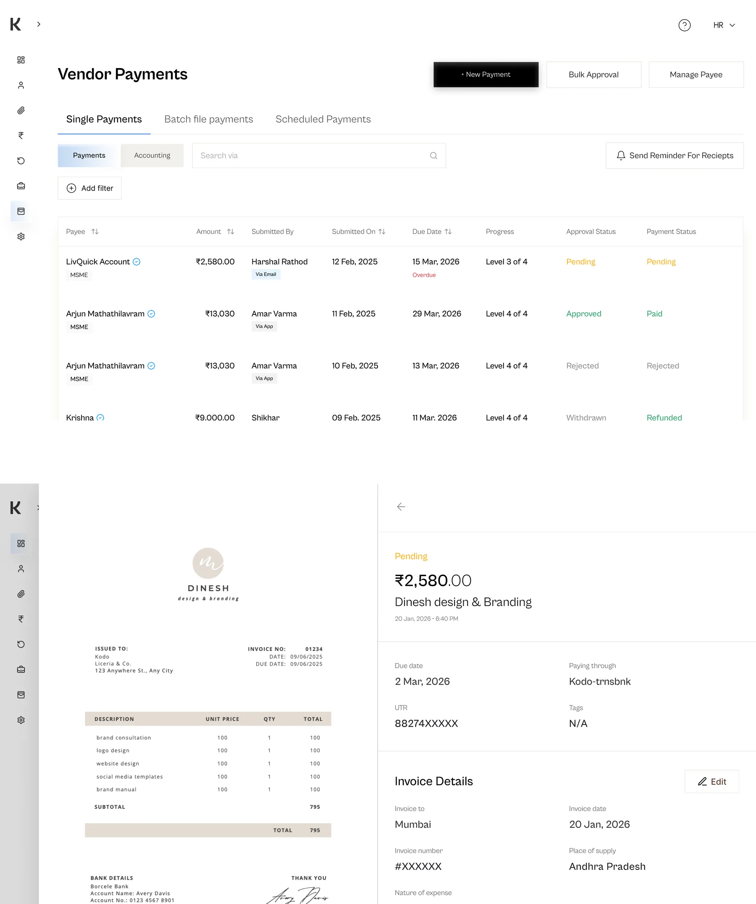
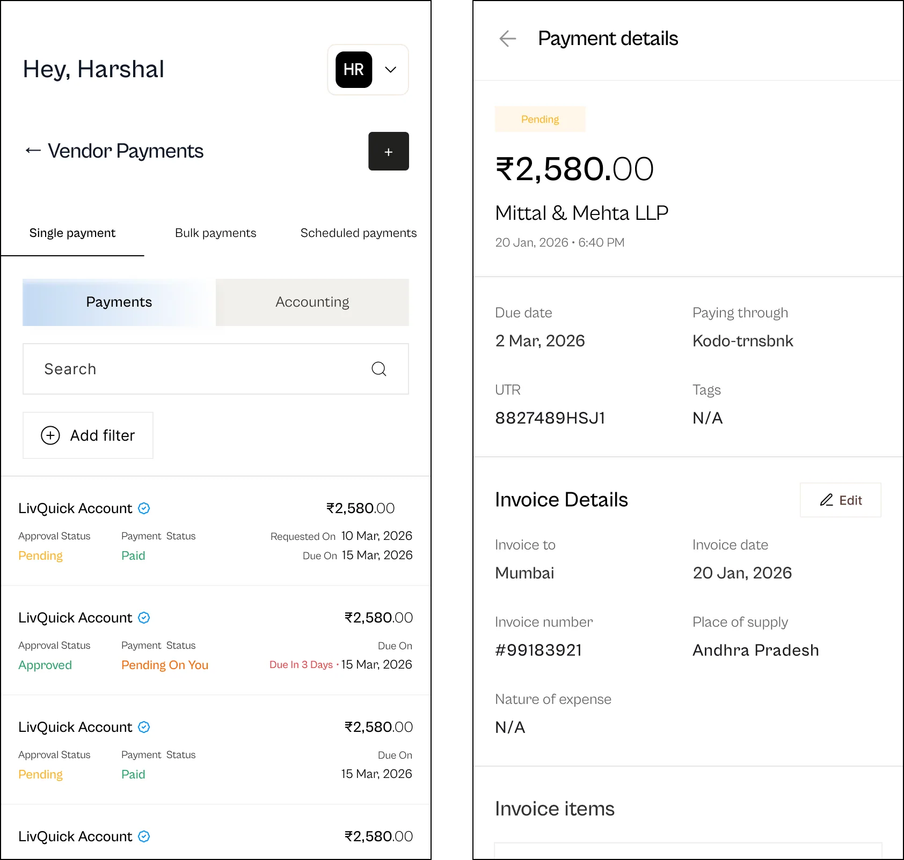

Identifying the Problem
Different screens had evolved their own button styles and placements, so users had to re-learn each one. The table itself buried important columns, and scanning for a specific payment meant reading row by row instead of letting hierarchy guide the eye.

What We Made
We redesigned the table and header using the new design system and language — one consistent button hierarchy across every screen, so primary actions always look and sit the same way. Data hierarchy was rebuilt around what users actually search for: key columns surfaced, secondary detail tucked into progressive layers, and clearer states so finding the right payment takes seconds, not scanning.


Outcome
The consistent button language became the template for every table view that followed — this screen effectively set the standard for the rest of the product. Feedback was quiet in the best way: fewer questions, fewer mis-clicks, and "how do I find X payment" stopped coming up.